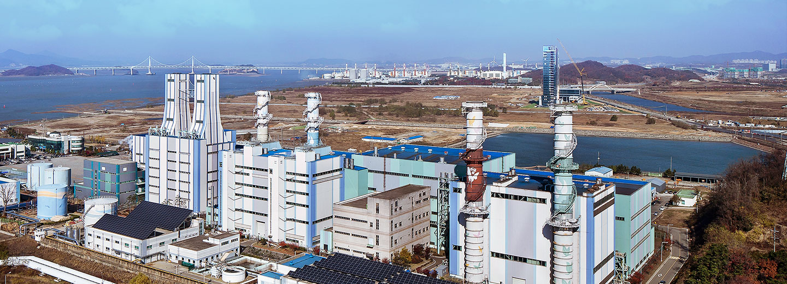

수도권 전력공급의 핵심! 고효율 최신식의 복합화력설비!
인천발전본부
 인천발전본부는 우리나라 최대 전력수요지인 수도권에 위치하여,
전기 생산 후 송전 시 전력손실이 적은 장점이 있고 수도권 전력계통 안정에 크게 기여하고 있는 발전소입니다.


고효율 복합발전설비 안정적 운영
1970년 기력 1호기가 준공되어 운영하기 시작하여 1979년 기력 4호기까지 건설되어 기력 설비용량이 1,150MW에 이르렀으나, 기력 3, 4호기는 2009년, 기력 1, 2호기는 2014년 4월 1일부로 폐지되었습니다. 인천발전본부는 안정적인 전력공급을 위해 2005년 복합1호기(503.5MW)를 준공한 이후 고효율의 최신식 복합발전설비의 건설을 지속적으로 추진하여, 2009년에는 복합2호기(509MW)를 준공하였으며, 2012년 12월에는 복합3호기(450MW)가 준공되어 운영 중입니다. 도심지역에 위치한 발전소로써 전력공급 뿐만 아니라, 경기도 부천과 인근지역에 난방열도 공급하고 있습니다.
환경부 녹색기업 지정
1996년부터 7회 연속
2019.03
지속적인 환경 친화경영을 통한 23년 연속 녹색기업으로 선정
최신식 설비로의 교체 운영으로 인천발전본부는 고효율 복합발전설비의 안정적 운영을 통해 수도권의 전력수급 안정에 큰 역할을 담당하고 있습니다. 1970년부터 시작된 인천지역 발전의 역사를 고스란히 간직한 인천발전본부는 지역사회의 일원으로 사회봉사활동, 문화행사 지원 등 사회공헌 활동을 적극적으로 추진하고 있으며, 철저한 환경관리와 지속적인 환경 친화경영을 통하여 1996년부터 7회 연속 연속 환경부의 녹색기업으로 인증 받는 등 깨끗하고 청정한 지역 만들기에도 앞장서고 있습니다.
인천발전본부 설비현황
| 복합화력 | 태양광 | 합계 |
|---|---|---|
| 1호기 503.539MW
2호기 508.908MW 3호기 450MW |
0.304MW | 총 1,462.751 |